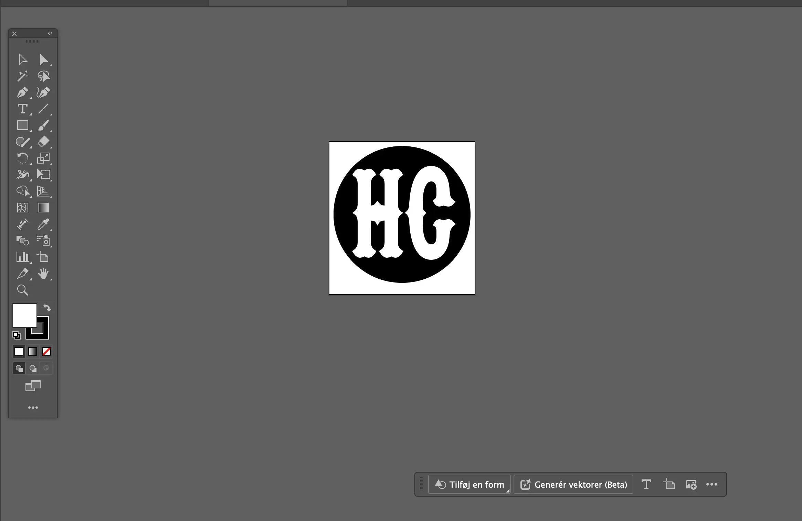
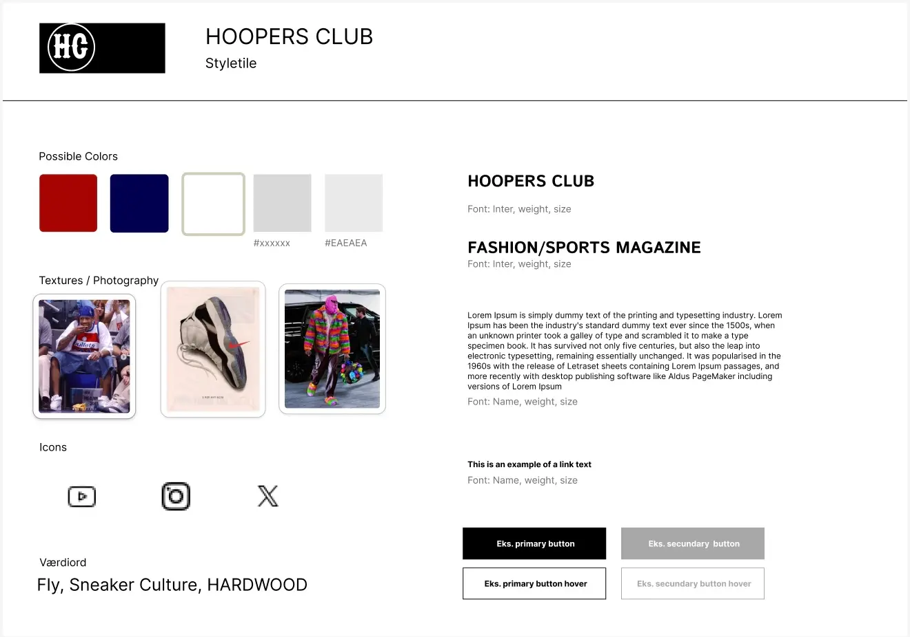
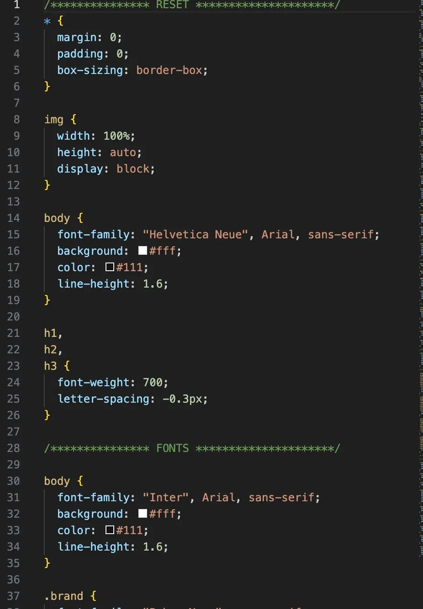
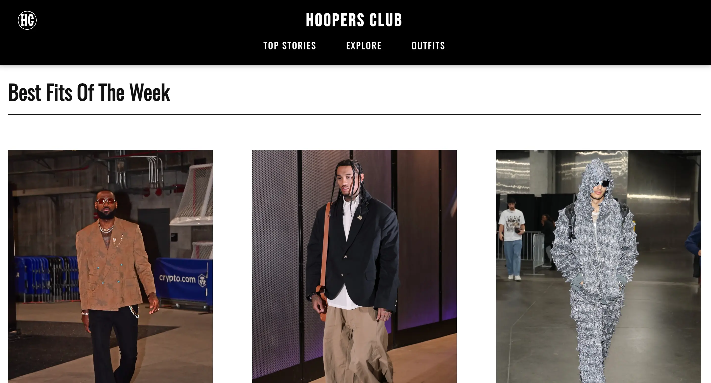

Grundlæggende UX UI

Temaet
I Tema 3 arbejdede jeg med UX/UI-design og udviklede et emnesite med fokus på basketballkultur og mode. Forløbet handlede om at forstå, hvordan design, brugeroplevelse og visuel kommunikation spiller sammen i udviklingen af digitale produkter.

Formålet
Formålet med projektet var at lære at designe websites ud fra brugerbehov og designprincipper frem for kun at fokusere på selve kodningen. Jeg arbejdede med research, idéudvikling og designprocesser for at skabe en løsning med en tydelig visuel identitet og en god brugeroplevelse

Process
Projektet begyndte med research og inspiration inden for basketball og streetwear-kultur. Herefter arbejdede jeg i Figma og FigJam med moodboards, styletiles, wireframes og prototyper. Jeg brugte også Crazy 8's til idéudvikling og anvendte gestaltlovene til at skabe struktur, balance og visuel sammenhæng i designet.

Løsning
Resultatet blev et moderne emnesite med fokus på basketball, sneakers og mode. Designet blev omsat fra prototype til et færdigt website ved hjælp af HTML og CSS, hvor jeg arbejdede mere avanceret med grid-layouts, typografi, billedplacering og responsivt design for at skabe et professionelt udtryk.

Erfaring og refleksion
Temaet gav mig en bedre forståelse for hele designprocessen bag et website. Jeg lærte at arbejde mere strategisk med visuel identitet, brugeroplevelser og layout, samtidig med at jeg udviklede mine færdigheder inden for Figma, CSS og grid-layouts. Forløbet viste mig, hvor stor betydning planlægning og design har, før man begynder at kode.